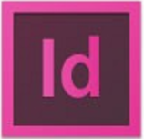

my journey
-
1998
the start
I am born in Seoul, South Korea, under the name Sujung Lee. For convenience, I am also given the English nickname Suzy.
-
2005~2009
art addiction
I move to Canada and fill countless sketchbooks with drawings. I realize my love for minimalism and cartoon design.
-
2009~2013
adobe: love at first sight
 
I move back to Korea and become the editor in chief of photography of the school yearbook as a sophomore. I fall in love with the Adobe Creative Suite and start working on my first book.
read the book -
2014
first recognition
I win the silver prize in the International English Writing Competition (IEWC) and the Publications Award for my contributions to the yearbook.
-
2015
chemistry and art

I illustrate a cartoon periodic table and create the website Just Love Chem to display it. A physical rendition of my periodic table is displayed in front of Hwaseong fortress.
3 of my photos receive the Teen Ink Editor's Choice Award. I also receive the DP Art Award and the NSPA Journalism Honor Roll.
visit the site -
2016
budding programmer
I get accepted to Northwestern University and pursue a Bachelor's in Computer Science. I learn valuable languages like C++ and Python.
I join HELIX magazine as a computer science writer.
-
2017
full stack web developer

I join Potato as a full stack web developer, developing features for the platform using REACT and REDUX.
see potato